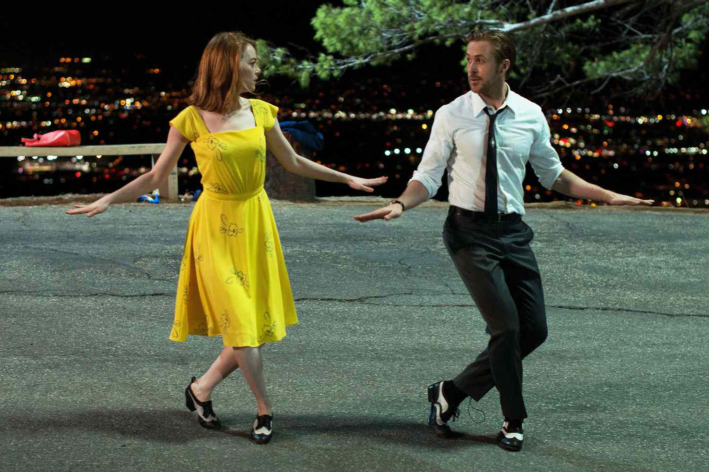
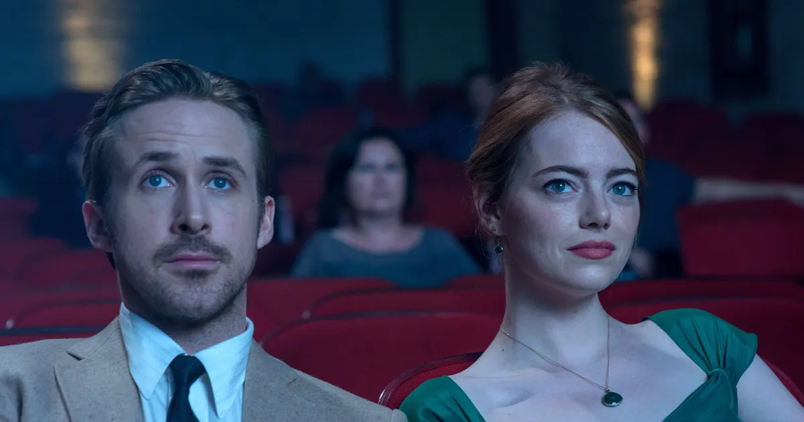
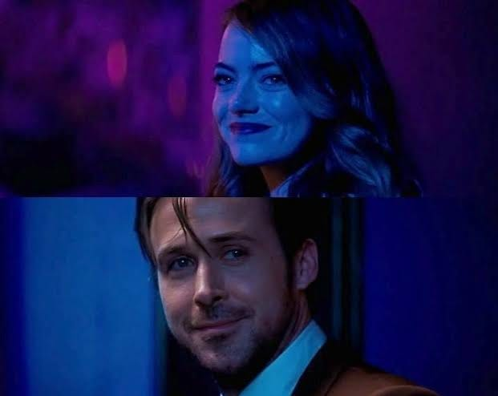
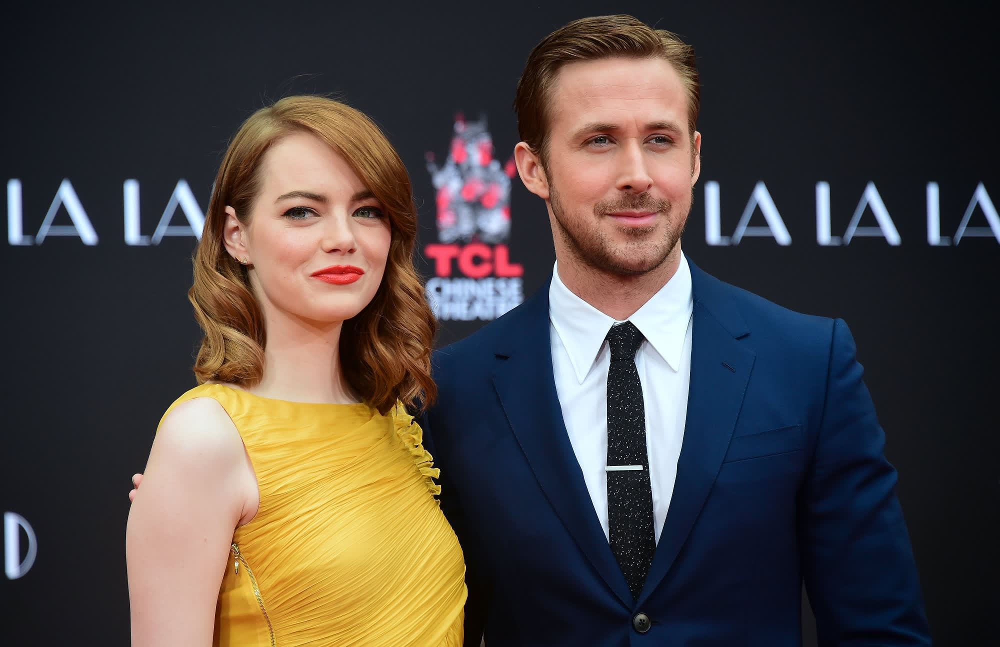
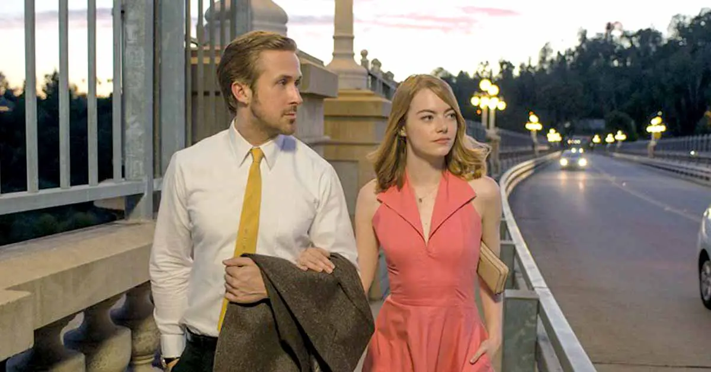

- 1. Ryan Gosling spent two hours a day, six days a week in piano lessons learning the music by heart. No CGI was used for the piano sequences.

- 2. The Audition scene, where the casting director interrupts Mia's emotional performance to take a call, is inspired by one of Ryan Gosling's auditions.

- 3. The movie stops being a musical the moment Sebastian and Mia stop being happy.

- 4. Sebastian never introduces himself, and Mia never uses his name.

- 5. The first and last time Mia and Sebastian meet are due to traffic.

|